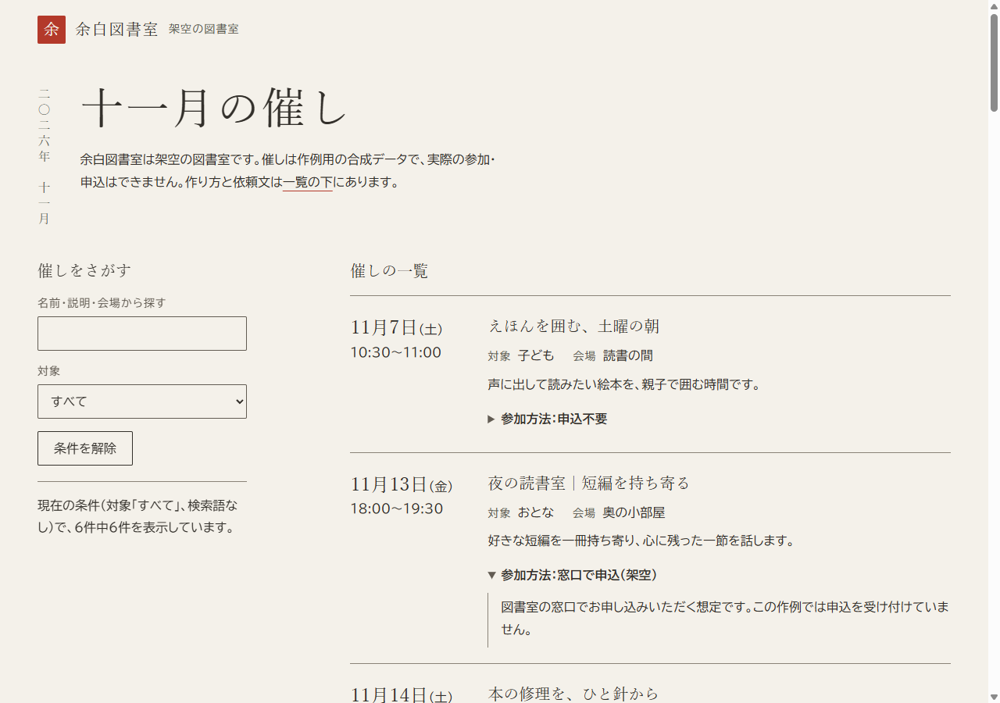
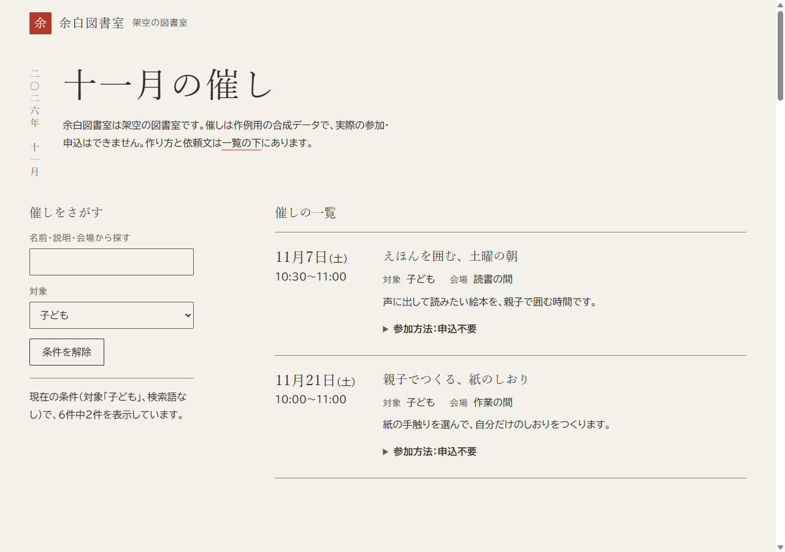
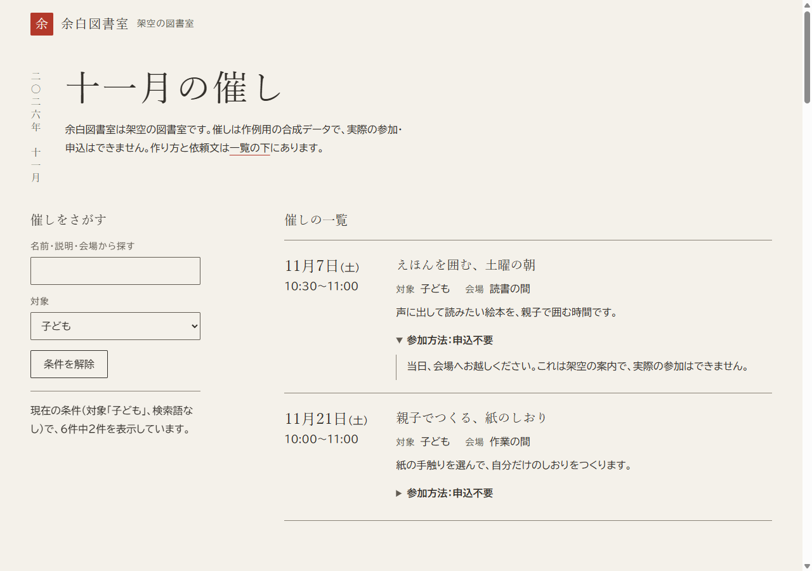
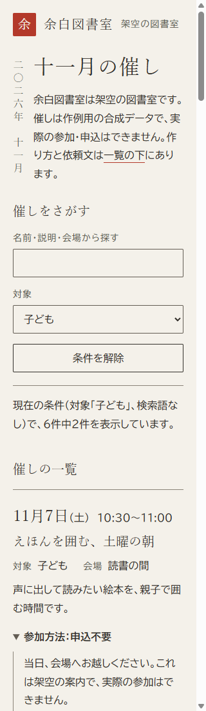

Design Taste の作例
1／5 入力
保存した実画面で解説・無音
架空の図書室



children.png の対象欄と件数

mobile.png・320px幅（2件目は下）
AIが画面を作る前に
読む、デザインの指示書
生成APIではなく、AIが読む文章。
24のうち5つを読み、計画してから実装。
入力データ：events.json（架空の図書室・合成の6件）
名前・日時・対象・会場・本文・参加方法は、変えずに使います。
デザインの方向を
1つに決める
5つを読んで、スタイルは
japanese-minimal の1つだけ。
対象「子ども」で
6件から2件へ
対象の欄だけを変えた保存画面。
残るのは e01 と e04 の2件。
参加方法を開く
閉じた行にも要約を表示。開くと、
入力の本文がそのまま出ます。
依頼文で、
自分の催しに試す
【】を書き換えてAIに渡します。
作例ページでAIは動きません。
request.txt より抜粋（…は省略）
…の5つの SKILL.md（…）を読んでから、次の催し一覧のページを作ってください。
主催と利用者：【図書室や集会所などの名前、実在か架空か、主な利用者】
進め方：最初に design read を一行で書き、スタイルは japanese-minimal の1つだけにする。
コピーする場所
作例ページの下「依頼文で試す」の［依頼文をコピー］
またはテキスト（request.txt）
依頼文をコピーして、自分の催しで試す
原典：madebymustafa/design-taste（MIT）固定コミット c4a6bff